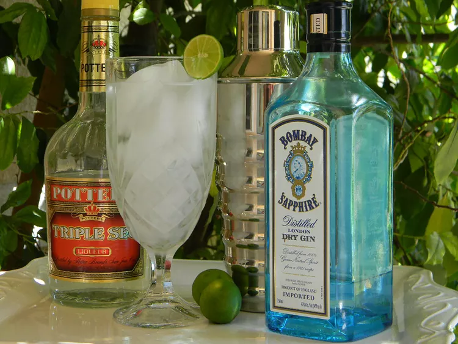

Kansas City Ice Water

- 2 cups ice, or as needed
- 1 fluid ounce gin
- 1 fluid ounce vodka
- 1/2 fluid ounce lime juice
- 1/2 fluid oucnce triple sec
- 3 fluid ounces lemon-lime flavored carbonated beverage
- Fill a shaker with ice; add gin, vodka, lime juice, and triple sec. Cover and shake until the outside of the shaker has frosted. Strain into a chilled pint glass with ice.
- Pour in lemon-lime soda to serve.